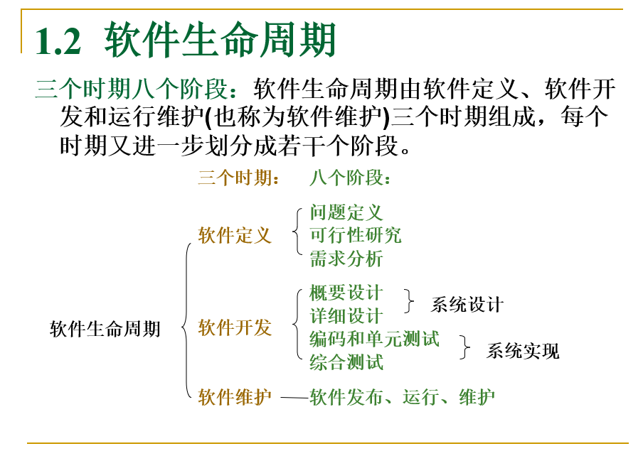

第一章
软件危机
- 软件危机是指在计算机软件的开发和维护过程中所遇到的一系列严重问题
软件工程
- 软件工程：是指导计算机软件开发和维护的一门工程学科。
软件工程的概念是哪一年提出的？1968年
瀑布模型的关键不足在于：不能适应需求的动态变更
软件可行性研究实质上是要进行一次简化、压缩的需求分析和设计过程
软件制造工程活动主要关注编码，也包括详细设计、单元测试
结构化设计是一种面向数据流的设计方法
一个项目是否开发,从经济上来说是否可行,归根结底是取决于对成本的估算
在面向对象的设计中，我们应遵循的设计准则除了模块化、抽象、低耦合、高内聚以外，还有信息隐蔽
软件生命周期

第二章
第三章
低质量子程序

高内聚低耦合

创建类的原因
- 为现实世界中的对象建模
- 为抽象的对象建模
- 降低复杂度
- 隔离复杂度
- 隐藏实现细节
- 限制变动的影响范围
- 隐藏全局数据
- 让参数传递更顺畅
- 建立中心控制点
- 让代码更易于重用
- 为程序族做计划
- 把相关操作包装到一起
- 实现某种特定的重构
注释基本原则
- 注释应该增加代码的清晰度。代码注释的目的是要使代码更易于被其他开发人员等理解
- 避免使用装饰性内容
- 保持注释的简洁
- 注释信息不仅要包含代码的功能，还应给出原因
- 不要为了注释而注释
- 除变量定义等较短语句的注释可以使用行尾注释外，其他注释避免使用行尾注释
命名的基本原则
名字应能反映它所代表的实际东西，应有一定实际意义
使用可以准确说明变量/字段/类/接口/包等的完整的英文描述符
采用该领域的术语
采用大小写混合，提高名字的可读性
尽量少用缩写
避免使用长名字
避免使用相似或者仅在大小写上有区别的名字
四种编程命名规范
- 匈牙利命名法
- 驼峰式命名法
- 帕斯卡命名法
- 下划线命名法
版本控制的好处
- 便于团队代码共享
- 保证整个团队使用统一的代码版本
- 能获得版本控制工具中保存的任何版本
- 能够把出错或误操作的最新版的项目恢复到正确的历史版本
- 快速的集成
异常的概念
- 异常是指把代码中的错误或异常事件传递给调用方代码的一种特殊手段
异常的基本结构
- 子程序使用throw抛出一个异常对象，在被调用链上层其他子程序的try-catch语句捕获
防御式编程
- 防御式编程的主要思想是：子程序不因传入错误数据而被破坏，哪怕是由其它子程序产生的错误数据
- 其核心是承认程序内部都会有问题，都需要被修改，这是保护的基础
- 防御式编程是针对程序外部的保护
- 保护程序免遭非法输入数据的破坏
- 断言
- 错误处理
- 异常
- 隔离程序
- 辅助调试代码
第四章
软件测试是为了发现错误而执行程序的过程
模块并不是一个独立的程序，因此必须为每个单元测试开发驱动程序和存根程序
第五章
软件维护的定义
- 所谓软件维护就是在软件已经交付使用之后，为了改正错误或满足新的需求而修改软件的过程
可分为4项活动：
- 改正性维护：把诊断和改正错误的过程称为改正性维护 17%~21%
- 适应性维护：为了和变化了的环境适当地配合而进行的修改软件的活动，是既必要又经常的维护活动。 18%~25%
- 完善性维护：为了满足用户提出的增加新功能或修改已有功能的要求和一般性的改进要求 50%~66%
- 预防性维护：为了改善未来的可维护性或可靠性而修改软件的工作 4%
决定软件可维护性的因素
- 可理解性
- 可测试性
- 可修改性
- 可靠性
- 可移植性
- 可使用性
- 效率
tips
因计算机硬件和软件环境的变化而作出的修改软件的过程称为适应性维护
下列属于维护阶段的文档是 软件问题报告
软件按照设计的要求，在规定的时间内和条件下达到不出故障，持续运行的要求的质量特性成为可靠性
确认测试又称有效性测试。验证软件的功能、性能及其它特性是否与用户的要求一致